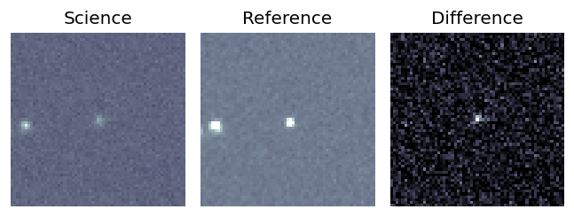
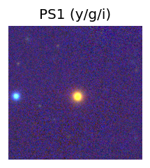
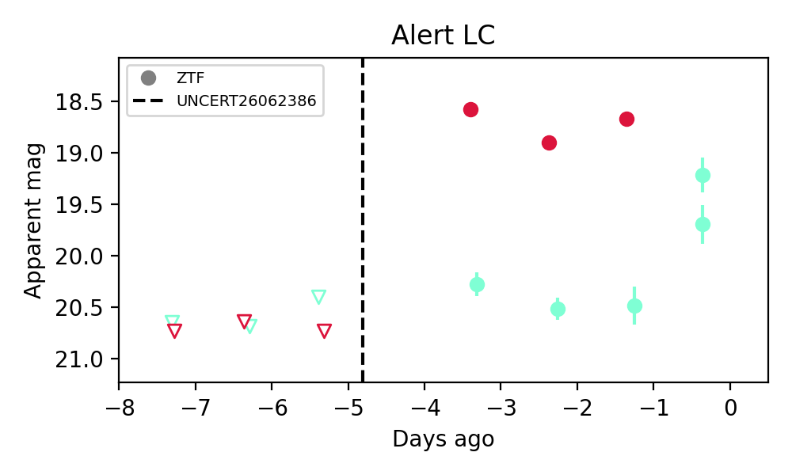

Candidate List 20260628 Previous Day Next Day Section 1: New Sources (age<1d) Cosmological Afterglow
Section 2: Old (1-5d) sources observed last night placeholder
Section 1: New Afterglow/FBOT Cands Last Night (0)
Section 2: Older Sources Observed Last Night (5)
0. ZTF26abdbeqv (FBOT?) [Back to Top] [Share] [Trigger Swift] [Fritz ] [Lasair ]RA, Dec: 281.32662, 49.88347 18h45m18.39s, 49d53m0.50sGalactic (l, b): 79.1775, 21.34896 ext(g-r) = 0.051LegacySurvey: 1 sources in 3 arcsec Closest: d = 0.61 arcsec, 179.6 deg (east of north) photoz=0.71 (68% bounds 0.25, 1.04), type=REX peak abs mag = -24.66 (68% bounds -21.94, -25.68)
1. ZTF26abdbeqv (FBOT?) [Back to Top] [Share] [Trigger Swift] [Fritz ] [Lasair ]RA, Dec: 281.32662, 49.88347 18h45m18.39s, 49d53m0.50sGalactic (l, b): 79.1775, 21.34896 ext(g-r) = 0.051LegacySurvey: 1 sources in 3 arcsec Closest: d = 0.61 arcsec, 179.6 deg (east of north) photoz=0.71 (68% bounds 0.25, 1.04), type=REX peak abs mag = -24.66 (68% bounds -21.94, -25.68)
2. ZTF26abdgdtq (FBOT?) [Back to Top] [Share] [Trigger Swift] [Fritz ] [Lasair ]RA, Dec: 269.13506, 41.68859 17h56m32.41s, 41d41m18.94sGalactic (l, b): 68.09916, 27.44832 ext(g-r) = 0.035LegacySurvey: 1 sources in 3 arcsec Closest: d = 2.21 arcsec, 148.5 deg (east of north) photoz=0.55 (68% bounds 0.38, 0.81), type=PSF peak abs mag = -24.41 (68% bounds -23.47, -25.41) Consistent with synchrotron, g-r>0!
3. ZTF26abdgzsu (Afterglow?) [Back to Top] [Share] [Trigger Swift] [Fritz ] [Lasair ]RA, Dec: 281.01127, 10.96066 18h44m2.70s, 10d57m38.38sGalactic (l, b): 41.89578, 6.59662 ext(g-r) = 0.385
4. ZTF26abehxvu (Afterglow?FBOT?) [Back to Top] [Share] [Trigger Swift] [Fritz ] [Lasair ]RA, Dec: 266.05565, 54.82597 17h44m13.36s, 54d49m33.49sGalactic (l, b): 82.68746, 31.39532 ext(g-r) = 0.042

LegacySurvey: 1 sources in 3 arcsec Closest: d = 1.99 arcsec, 200.6 deg (east of north) photoz=0.38 (68% bounds 0.3, 0.47), type=PSF peak abs mag = -23.06 (68% bounds -22.49, -23.62) 
Consistent with synchrotron, g-r>0!